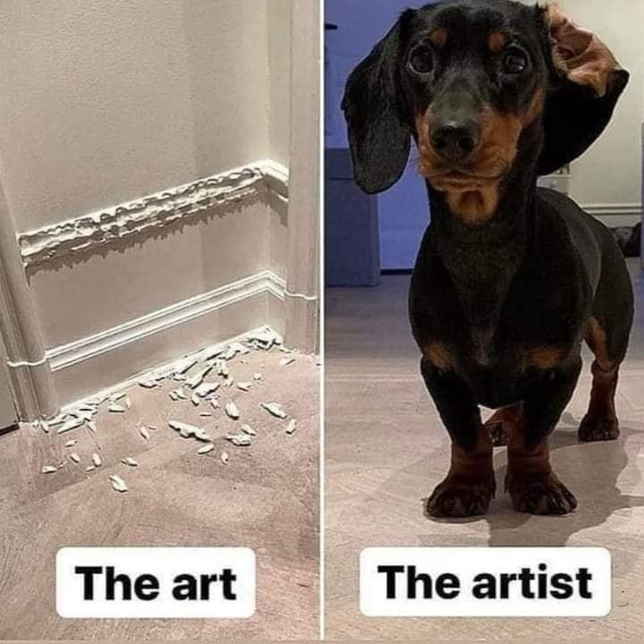

Gửi những người bạn biết đến mình từ youtube hay đâu đó trên internet. Mình viết những dòng này và gim lại
để
những bạn sau này biết đến mình có thể hiểu mình hơn.
Nếu mọi sự kiện chỉ là một chuỗi nhân quả. Thì cảm ơn bạn đã là nguyên nhân cho những sự kiện trong tương
lai
của mình.
Hơn ai hết mình thực sự hiểu việc bạn tìm kiếm rồi vô tình biết đến mình hoặc mình tìm kiếm và vô tình biết
đến
bạn giống như kiểu: “chiến thắng lại trọng lực để bay lên hoặc cố gắng tác dụng một lực để chiến thắng quán
tính
vật lí”. Thứ quán tính mà ai cũng ý thức muốn vượt qua. Và rồi nó dẫn chúng ta tìm kiếm thứ gì đó, để làm gì
đó
và biết đến nhau.
Còn về phía mình thì mình coi bạn là một yếu tố ngẫu nhiên khi mình tuân theo những thứ tất nhiên, nếu không
phải là bạn thì cũng sẽ là một người khác. Ngược lại cũng thế nếu không phải là mình thì cũng sẽ là một
người
khác.
Các bạn đừng thắc mắc tại sao nội dung trên youtube hay đâu đó của mình lại đa dạng như vậy. Có thể là công
nghệ, lập trình, sinh học, âm nhạc, vật lý lượng tử, toán học, hoá học, 3D, hay bất kể thứ gì mình quan tâm.
Bởi
mình là một người tò mò về vũ trụ, khoa học và đang trên con đường tìm chân lý về những thứ thú vị trong vũ
trụ.
Việc bạn xem video chỉ là hệ quả của việc mình có thói quen lưu lại kiến thức bằng video, mình rất vui vì hệ
quả
này lại giúp được một số bạn. Các bạn không phải là nguyên nhân của điều đó, và có thể các bạn chả quan tâm
đến
nhạc rap hay công thức về chu kỳ bán rã của các nguyên tử, hay việc đột biến trong ADN thì hãy bỏ qua nó và
xem
những nội dung bạn quan tâm, bởi đơn giản kia là những thứ mình quan tâm. Nếu chúng ta là một hàm số f(nhận
thức) = hành động. Thì mình có thể phủ định lại hành động của mình ngay lập tức nếu nhận thức của mình thay
đổi.
Khi bạn nhìn vào một video là bạn đang nhìn vào quá khứ của mình. Và chính mình cũng nhìn vào nó để biết
được
rằng mình giỏi hơn mỗi ngày. Và nhận thức tại một thời điểm có thể sai do những thiên kiến. Mình rất cảm ơn
những bạn đã chỉ ra những thiên kiến đó.
Các bạn không nên quá kỳ vọng vào mình. Mình không biết thuyết định mệnh có tồn tại không. Nhưng việc các
bạn
muốn và tìm kiếm là nguyên nhân. Tin mình đi nó sẽ có một kết quả tốt. Rất vui được biết bạn, hi vọng chúng
ta
có thể cùng làm điều gì đó trong tương lai. Mình không cần bất kỳ lợi ích gì ở bạn vì mình tự làm được và
mình
có đủ năng lực và tài năng để làm hầu hết những thứ bản thân cần. Tất nhiên được sự giúp đỡ và ủng hộ của
bạn
thì chúng ta sẽ đi nhanh hơn và cùng làm điều gì đó cho thế giới. Nhưng sẽ dựa trên nguyên tắc cả 2 đều thấy
vui
vẻ. Mình cũng không cần chiến thắng ai cả vì chiến thắng bản thân mình còn khó hơn rất nhiều. Mình rất cởi
mở
bạn có thể nhắn tin cho mình tất nhiên nếu mình không kịp rep cũng đừng ghét mình. Ít nhất khi bạn nhắn tin
mình
biết bạn tồn tại. Cảm ơn các bạn
Học sinh cá biệt tại trường tiểu học Ngô Mây, Sơn Trà, Đà Nẵng

Học sinh nghiêm túc tại trường THCS Phan Bội Châu, Sơn Trà, Đà Nẵng
Học sinh Chuyên toán tại Trường THPT Chuyên Lê Quý Đôn Đà Nẵng
Sinh viên công nghệ thông tin tại Đại học Bách Khoa, Đại học Đà Nẵng
Điều gì đang đợi tôi ở phía trước?
Giải ba cuộc thi Olympic tin học Miền Trung - Tây Nguyên năm 2022
Giải nhì cuộc thi HSG toán cấp thành phố năm 2022
Giải nhì cuộc thi tin học trẻ cấp thành phố năm 2022
Giải ba cuộc thi tin học trẻ cấp thành phố năm 2021
Giải khuyến khích cuộc thi HSG toán cấp trường năm 2021
Giải ba cuộc thi HSG toán cấp trường năm 2020
Giải nhì cuộc thi HSG toán cấp thành phố năm 2019
Giải ba cuộc thi HSG toán cấp quận năm 2018
Giải ba cuộc thi Olympic giải toán qua mạng cấp quận năm 2017
Giải nhì cuộc thi HSG toán cấp trường năm 2017
10 năm đạt danh hiệu HSG, 2 năm đạt danh hiệu HSK(lớp 2,3)